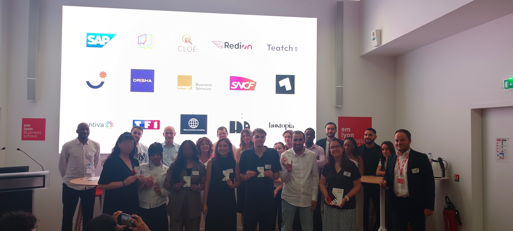

04 · Hackathon · 2026
Crosslines
L’application qui facilite la collaboration entre les clients et les entreprises.The app that makes collaboration between clients and companies easier.
Prix du juryJury Prize

04 · Hackathon · 2026
L’application qui facilite la collaboration entre les clients et les entreprises.The app that makes collaboration between clients and companies easier.
Prix du juryJury Prize
ConstatObservation
La gestion de projet est aujourd’hui essentielle pour fluidifier les relations entre les agences web et leurs clients.Project management is now essential to smooth the relationship between web agencies and their clients.
66%
des projets web ou de refonte en France rencontrent des retards ou des dépassements (budget, délai ou périmètre).of web or redesign projects in France run into delays or overruns (budget, timeline or scope).
40%
des retards de projet sont liés à des problèmes de communication et de validation client.of project delays are tied to communication and client-validation issues.
70%
des problèmes dans les projets digitaux viennent d’une mauvaise gestion de l’information (fichiers dispersés, versions multiples, retours non structurés).of digital project issues come from poor information management (scattered files, multiple versions, unstructured feedback).
Persona
Marc
Responsable marketing, Studio GalbeMarketing Manager, Studio Galbe
Responsable marketing du Studio Galbe, spécialisé dans l’édition de meubles contemporains.Marketing manager at Studio Galbe, a contemporary furniture editor.
Gérer la refonte du site web de son entreprise, en plus de ses missions quotidiennes.Manage his company's website redesign, on top of his day-to-day work.
ProblématiqueProblem Statement
Comment pourrait-on aider Marc à centraliser les contenus et valider les étapes de la refonte sans surcharger son quotidien de responsable marketing unique ? How can we help Marc centralize content and validate redesign milestones without overloading his day-to-day as the sole marketing manager?
Notre solutionOur Solution
Une plateforme web simple d’utilisation pour éviter à Marc de se perdre dans les informations. Il dépose ses contenus et commente les maquettes en ligne, directement là où les éléments apparaissent.A web platform simple enough that Marc never gets lost in information. He uploads his content and comments on mockups online, right where the elements appear.
Fluidité des échanges avec l’agence. Marc garde le contrôle total sur son projet.Smoother exchanges with the agency. Marc keeps full control over his project.
Crosslines, c’estCrosslines Is
Un gain de temps importantA real time saver
Validations en quelques clicsValidation in a few clicks
Plus de flexibilitéMore flexibility
Simplicité, Clarté, Rapidité et accompagnement.Simplicity, clarity, speed and support.
L’avenirWhat's Next
Prochaine étape : l’intégration de l’intelligence artificielle.Next step: integrating artificial intelligence.
Le formatThe Format
JOUR 01
Découverte du sujet, répartition des rôles, premières recherches.Brief revealed, roles split, initial research.
Après-midi : premières avancées.Afternoon: first progress.
JOUR 02
Journée entière : design de la plateforme, contenu, structure du pitch.A full day: platform design, content, pitch structure.
JOUR 03
Finitions le matin, présentation devant le jury l’après-midi.Final polish in the morning, jury presentation in the afternoon.
L’équipeThe Team

L’équipe avec le prix du jury.The team with the jury prize.